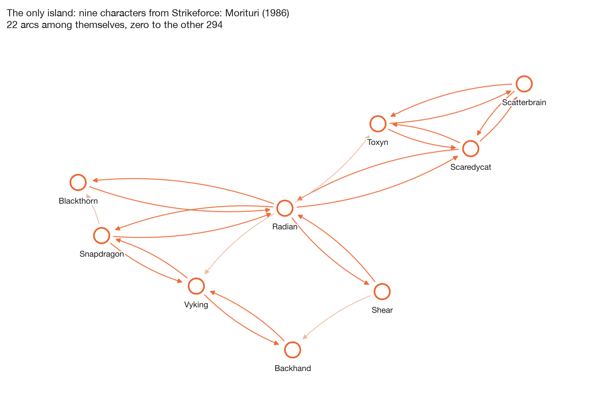

Week 01
Who gets linked, who does the linking, and who gets left out
Spider-Man is named by a third of the category. Nobody has ever heard of the nine characters in the corner who only talk to each other.
The question
The course gives every group the same frozen snapshot: the 303 articles in Wikipedia's Category:Marvel Comics superheroes, with an arc from A to B whenever A's article links to B's. Nobody chose this structure. It fell out of twenty years of separate editing decisions, one link at a time.
So we asked the three questions that structure alone can answer. Who does everyone point at? Who does the pointing? And who does the network fail to reach at all?
The third question turned out to be the interesting one.
Loading it without losing anyone
The course flags a trap on the data page and it is worth taking seriously. Seventeen of the 303 characters have no link in either direction. Build the graph from the edge list alone and those seventeen never get created, because an edge list can only mention nodes that have edges. You get 286 nodes, no error, and a quietly wrong answer to every question about coverage.
Adding the roster first is the whole fix:
nodes = pd.read_csv("week1_nodes.tsv", sep="\t", comment="#")
edges = pd.read_csv("week1_edges.tsv", sep="\t", comment="#",
names=["source", "target"])
D = nx.DiGraph()
D.add_nodes_from(nodes.node_id) # this line is the whole fix
D.add_edges_from(edges.itertuples(index=False, name=None))That gives 303 nodes and 1,784 arcs. Collapsing to undirected leaves 1,434 edges, because 350 pairs of characters link to each other in both directions and each of those pairs becomes one edge. Mean degree is 9.5, density is 0.02, average clustering is 0.31. Inside the giant component the average shortest path is 2.7 hops and the diameter is 6.
The map

The picture splits three ways: one giant component with 277 characters in it, one island of nine, and seventeen singletons. There is no middle ground. No component of size 2, 3 or 40. The network is either everything or nothing.
Explore it yourself
Same data, live. Hover any character to see who links to them, drag to rearrange, and click to open the Wikipedia article. Hold ⌘ or Ctrl while scrolling to zoom, and double-click the canvas to reset the view.
Switch between the two size buttons and watch the picture reorganise. That swap is the next section.
Two different populations
In-degree and out-degree sound like two views of the same thing. They are not measuring the same act.
Your in-degree is a count of other people's decisions. Every one of Spider-Man's 106 incoming links is some editor, working on some other article, deciding he was worth a mention. Nothing about his own article causes it, and nothing caps it. Out-degree is one person's decision: someone sat down and wrote a certain number of links into one article, and an article is a finite thing that a finite number of people bothered to write.
The ceilings show the difference. In-degree reaches 106. Out-degree tops out at 28.

| Linked to most | in | out | Links out most | out | in |
|---|---|---|---|---|---|
| Spider-Man | 106 | 9 | Betsy Braddock | 28 | 7 |
| Hulk | 64 | 10 | Cloak and Dagger | 24 | 11 |
| Wolverine | 60 | 17 | Adam Warlock | 22 | 8 |
| Doctor Strange | 50 | 17 | Venom | 21 | 17 |
| Deadpool | 33 | 19 | She-Hulk | 20 | 29 |
| She-Hulk | 29 | 20 | U.S. Agent | 20 | 6 |
| Scarlet Witch | 28 | 14 | Deadpool | 19 | 33 |
| Black Panther | 27 | 11 | Rachel Summers | 19 | 16 |
| Cyclops | 26 | 11 | Noh-Varr | 18 | 4 |
| Luke Cage | 25 | 9 | Doctor Strange | 17 | 50 |
Three names appear in both columns: Deadpool, Doctor Strange and She-Hulk. The other seven pairs are strangers to each other's list. Across all 303 characters the two degrees correlate at 0.50 by Pearson and 0.70 by Spearman, so they are related, and they are nowhere near the same measurement.
Betsy Braddock writes 28 links and receives 7. Spider-Man writes 9 and receives 106. One of them worked for it.
The lopsided cases make the mechanism obvious. Noh-Varr sends 18 links out and gets 4 back. Quasar receives 24 and sends 3. A long, carefully written article about a minor character generates a lot of out-degree and earns almost no in-degree, because out-degree is authored and in-degree is conferred.
The distributions
Both are plotted against k + 1, because a log axis has nowhere to put zero and 20 characters have out-degree 0.

On log-log axes the in-degree is close to straight over most of its range, with a long thin tail. Out-degree is not: it has a bump around 5 to 10 links and then it stops. That is the shape you get from a quantity with a natural ceiling, and it matches the story above. We ran the R² check in the week-1 notebook against a known exponential and a known power law, which is the only honest way to read straightness. In-degree leans power-law. We are not quoting an exponent off these plots.
The islands
This is what we came away thinking about.
Fifty-eight characters have in-degree 0, so nobody in the category links to them. Seventeen of those also have out-degree 0, which makes them isolates in the strict sense. Baymax is one. So is Miracleman, so is Yo-Yo Rodriguez from the Agents of S.H.I.E.L.D. series, so is Super Rabbit. They have articles, they are in the category, and inside this network they do not exist.
Then there is the one real island. Nine characters, 22 arcs among themselves, zero arcs to the other 294.

We expected the leftovers to be a random assortment of obscure characters. They are the opposite of random. All nine are the cast of Strikeforce: Morituri, a Marvel series that ran from 1986 to 1989 with a premise that gave its heroes superpowers and about a year to live before the powers killed them. The cast turned over constantly. Whoever wrote these nine articles wrote them as a set, cross-referencing teammates, and no other Marvel article had reason to mention any of them.
So the network's structure has preserved something about how the comics were published. A short-lived, self-contained series with a cast that never crossed over becomes, thirty years later, a connected component of nine that touches nothing. You could find that fact by reading 303 Wikipedia articles. Or you could run nx.weakly_connected_components and have it in a second.
What surprised us
- The gap has no middle. Component sizes are 277, 9, then seventeen 1s. Nothing in between. We expected a scatter of small clusters.
- Direction matters more than we assumed. Ignore direction and 277 characters are connected. Insist on following the arrows and the largest strongly connected component drops to 229, with 63 characters sitting in components of one. Those 63 can be reached but cannot get back.
- Forty-one characters link out and receive nothing. They can see the universe. The universe cannot see them.
- Spider-Man's 106 is 35% of everyone else. A third of the category names him. The runner-up, Hulk, has 64.
Checking the snapshot against live Wikipedia
The snapshot arrives ready-made, which is convenient and worth distrusting. Wikipedia's API serves the raw wiki-source of any article, internal links sit in it as [[Page name]], and that is exactly how the course harvested these edges. So we re-derived three articles ourselves and diffed them against the frozen file.
LINK = re.compile(r"\[\[([^\[\]|#]+)(?:\|[^\[\]]*)?\]\]")
def outlinks(text):
return {m.group(1).strip().replace(" ", "_")
for m in LINK.finditer(text)}
live = outlinks(wikitext("Betsy_Braddock")) & rosterBetsy Braddock: 28 links live, 28 in the snapshot, all 28 the same. Radian: 6 and 6. Baymax: 0 and 0, which confirms the isolate is genuinely isolated rather than a harvesting failure. No disagreements in either direction. The snapshot holds.
One practical note for anyone repeating this. Wikipedia answers 403 unless your request carries a User-Agent header naming your client. Set it and the API is friendly.
Reproduce it
Everything on this page comes out of three scripts in the repository:
python analysis/week01_facts.py # every number quoted above
python analysis/week01_figures.py # the four figures and the graph JSON
python analysis/week01_api_check.py # the live Wikipedia diffThe working, with the assertions and the distribution-shape diagnostics, is in notebooks/02_marvel_degrees.ipynb.